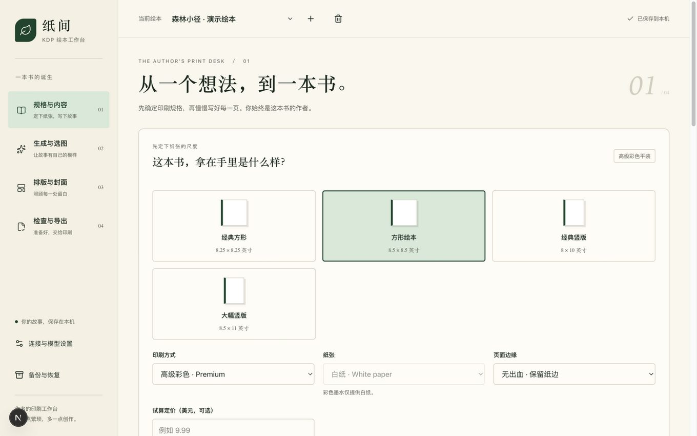
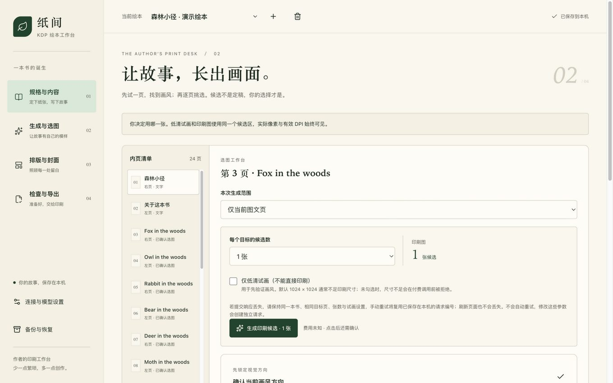
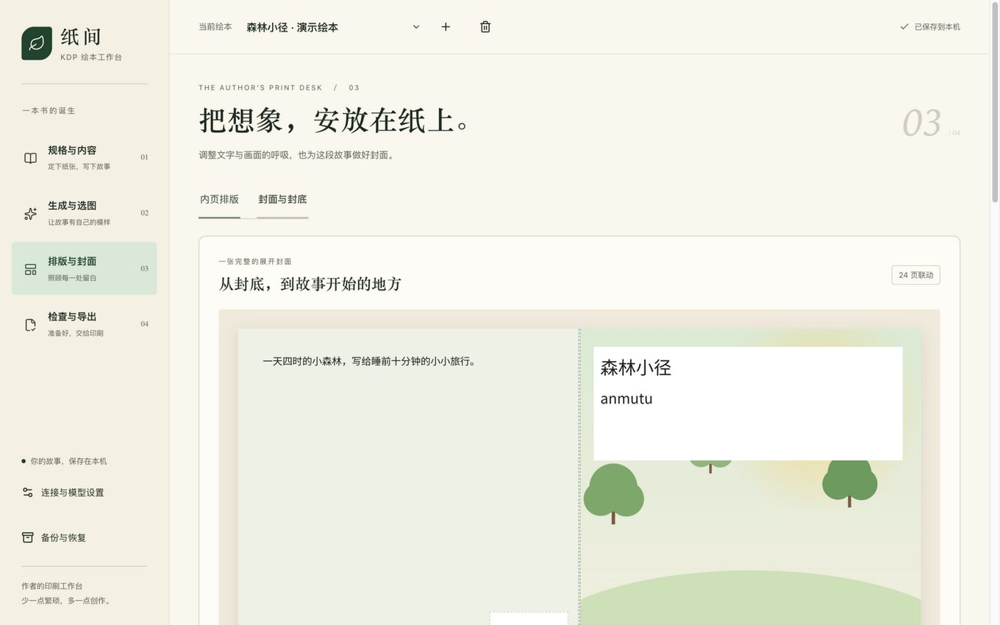
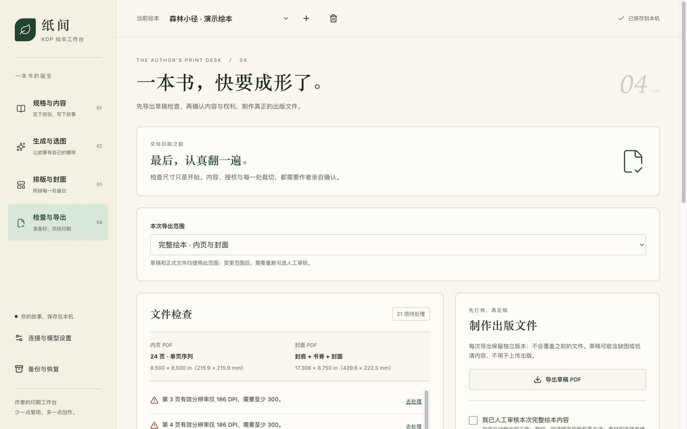

「纸间 · KDP Helper」是为独立作者打造的亚马逊 KDP 绘本工作台：印刷规格、插画、排版、导出，全流程在本机完成。每一条印刷规则都来自官方文档并标注核对日期——绝不猜测。
需要 Node.js 24：npm install 然后 npm run dev → 打开
127.0.0.1:3210
KDP Helper is a local-first workbench for indie authors making print-ready children's picture books for Amazon KDP. Every print rule comes from official documentation with a source link and a checked date — nothing is guessed.
Requires Node.js 24: npm install then npm run dev → open
127.0.0.1:3210
从确定规格到导出可上传的出版文件，一条清晰的路径。
A clear path from print spec to upload-ready files.
开本、黑白/彩色墨水、纸张、出血。页数范围、书脊宽度、装订边与每张图的最少像素，随选择即时算出。
Trim, ink, paper, bleed. Page ranges, spine width, margins and minimum pixels update as you choose.
手动写、用模板或让文字模型起草。插画可调用你自己的生图接口，也可以完全导入自己画的图。
Write by hand, from a template, or with a text model. Illustrations via your own image API — or import your own art entirely.
候选并排对比、灯箱放大查看来源；调整字号、颜色、裁切与封面，跨页预览翻书效果。
Compare candidates side-by-side, zoom in to inspect provenance; tune type, colors, crops and the wraparound cover.
奇数页、低清、缺字、文字溢出都会拦下正式导出。产出内页 PDF、完整封面 PDF 与上传说明。
Odd pages, low DPI, missing glyphs and overflow block the production export. You get interior + cover PDFs and upload notes.
工作台的真实截图（演示绘本《森林小径》，插画为本站演示用的程序生成图）。
Real screenshots of the app (demo book "森林小径"; illustrations are programmatically generated for this demo).




工具不替你做决定，但绝不让你白花钱或交出印不了的文件。
It never decides for you — but it won't let you waste money or ship an unprintable file.
页数上下限、书脊系数、出血几何、装订边分档、300 DPI 像素要求——每个数字标注官方文档链接与核对日期。规则变了改代码和测试，运行时零猜测。
Page limits, spine coefficients, bleed geometry, gutter tiers, 300-DPI minimums — every number carries an official source link and checked date. Rule changes happen in code and tests, never guesses at runtime.
请求像素不够印刷，付费调用直接拒绝；一张低清图回来整批暂停；断线或超时的请求永不自动重试，操作号防重复计费。
Paid generation calls are refused when pixels can't print; a low-res result pauses the batch; uncertain requests never auto-retry; persistent operation IDs prevent double billing.
美区印刷成本随墨水/纸张/页数即时估算；版税试算会提醒你 $9.98 与 $9.99 之间 50%→60% 的税率断点——定价差 1 美分，每册常差约 1 美元。
US printing cost per ink/paper tier in real time, with a royalty estimator that flags the $9.98/$9.99 (50%→60%) rate breakpoint — one cent of list price, roughly a dollar of royalty.
导出的是真实 PDF：嵌入中文字体、无裁切标记、图片扁平化转 CMYK（黑白内页自动转灰度）。草稿永远可导出（带水印），正式文件必须过全部检查。
Exports are real PDFs: embedded CJK font, no crop marks, flattened CMYK images (grayscale for B&W interiors). Drafts always export (watermarked); production files must pass every check.
只监听 127.0.0.1；无账号、无云端、无遥测；API Key 只存在本机文件。不配 Key 也完全可用——导入自己的图即可。
Listens on 127.0.0.1 only; no accounts, cloud or telemetry; your API key stays in a local file. Works fully without one — just import your own art.
三步开始，全程在本机运行。
git clone https://github.com/anmutu/kdp-helper.gitnpm install（需要 Node.js 24，22.14+ 兼容）npm run dev，浏览器打开 http://127.0.0.1:3210为什么是本地运行而不是在线服务？你的书稿、候选插画与 API Key 只存在自己电脑上，工具只监听本机地址——没有账号、没有云端、没有遥测。这是它隐私承诺的基础，也是设计选择。
Three steps, all on your machine.
git clone https://github.com/anmutu/kdp-helper.gitnpm install (Node.js 24; 22.14+ compatible)npm run dev and open http://127.0.0.1:3210Why local instead of a hosted app? Your manuscripts, candidate illustrations and API key stay on your own computer, and the app only listens on localhost — no accounts, no cloud, no telemetry. That privacy promise is the design, not a limitation.
回答最多人问的五件事。
The five things people ask most.
MIT 开源、完全免费。如果你接了自己的生图接口，费用由你的服务商按其规则收取——工具本身不收费也不经手付款。
不会，这是有意的。它导出两份 PDF 和一份上传说明（列明在 KDP 要选的参数），上传、Print Previewer 检查和 AI 内容申报都由你亲手完成。
不必。不配置任何 Key 也能用全部排版、校验与导出功能，插画全部手工导入即可。AI 只是把"生成候选"这一步变方便。
目前中文优先，README 有完整英文说明，国际化在路线图上。规格、代码与文档对英文用户友好，欢迎 PR。
Node.js 24（22.14+ 兼容）。在 macOS 上开发验证，Linux 应当可用，Windows 暂未测试。只监听本机地址，不暴露到网络。
Yes — MIT licensed. If you hook up your own image API, your provider bills you directly; the tool itself never charges or handles payments.
No, deliberately. It exports two PDFs plus an upload-notes file listing the exact KDP options to pick. The upload, Print Previewer check and AI-content declaration stay in your hands.
No. Everything (layout, validation, export) works with zero API keys — import your own artwork. AI is just an optional convenience for generating candidates.
Chinese-first for now, with a full English README; i18n is on the roadmap. Specs, code and docs are English-friendly; PRs welcome.
Node.js 24 (22.14+ compatible). Developed and tested on macOS; Linux should work; Windows untested. Listens on localhost only — never exposed to the network.